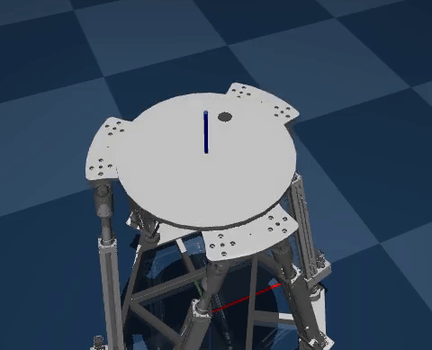
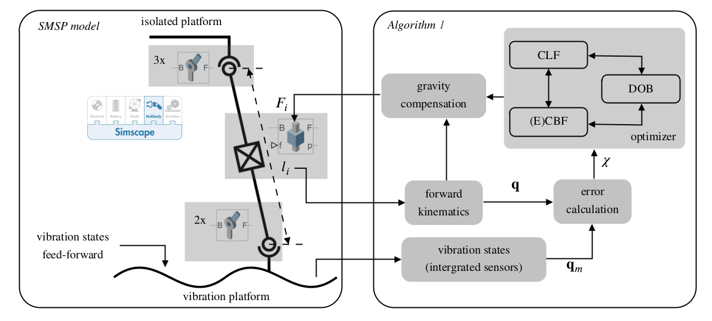
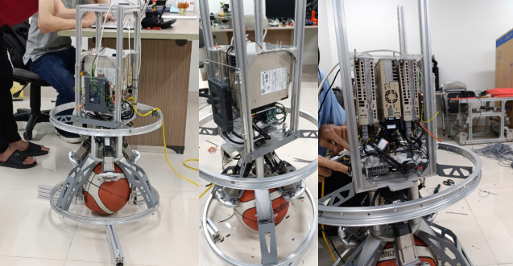
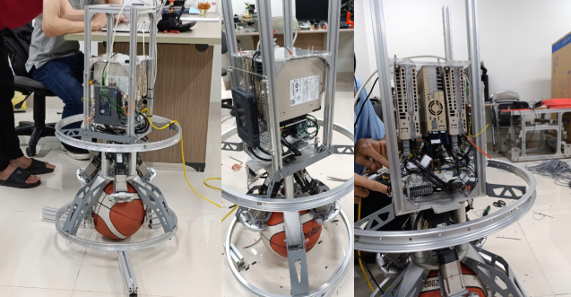
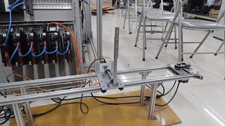
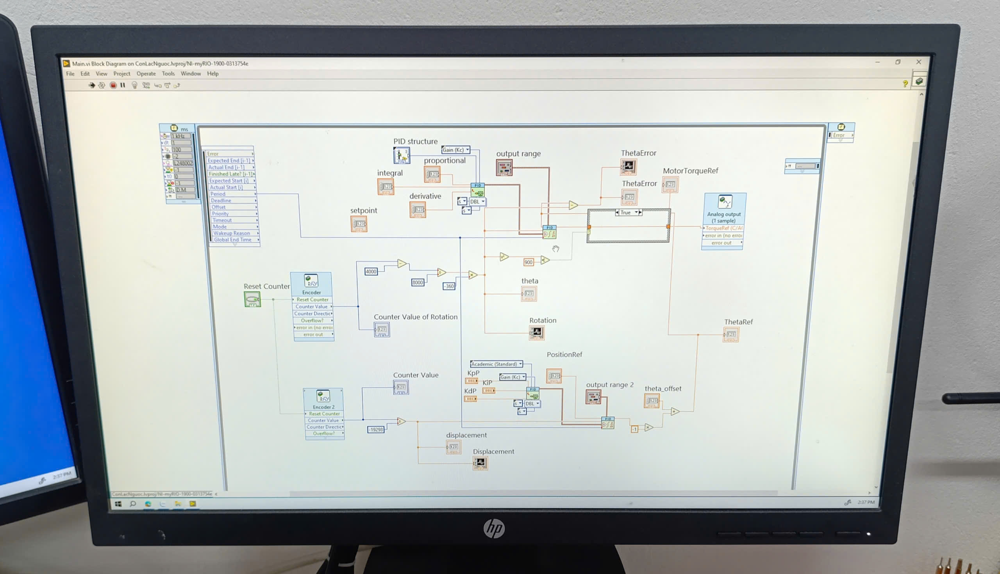

🚀 projects
🛠️ Member/Researcher/Labor
Mar 2025 - Dec 2025
- Title: Advanced Control of a Ship-Mounted Stewart Platform for Marine Applications
- Field: Marine Robotics and Control Systems
- Collaboration: Korea Institute of Science and Technology (KIST) & Institute for Control Engineering and Automation (ICEA), HUST
- Supervisors: PhD. Minh Nhat Vu and Assoc.Prof.PhD. Tung Lam Nguyen
In this project, I am responsible for:
- Leading the initial phase of the project by developing and testing motion control algorithms for the Stewart platform, focusing on trajectory tracking, stabilization, and disturbance rejection.
- Implementing and demonstrating a ball-bouncing experiment using the Stewart platform to showcase its dynamic motion control capabilities and validate real-time performance under challenging scenarios.
- Designing and implementing advanced control algorithms for the Stewart platform, including safety-critical and robust control strategies tailored for marine environments.
- Developing high-fidelity simulation models that capture marine environmental disturbances (such as waves, currents, and ship motion) and accurately represent the platform's kinematics and dynamics.
- Building the experimental setup, including mechanical assembly, hardware integration, Linux-based real-time kernel configuration, and EtherCAT communication for precise control and data acquisition.
- Conducting comprehensive experimental campaigns to validate control approaches, analyze system performance.
- Collaborating with cross-institutional teams to refine system requirements, troubleshoot technical challenges, and ensure seamless integration of hardware and software components.
- Preparing detailed technical documentation, authoring scientific publications, and presenting project outcomes to both academic and industrial collaborators.



🛠️ Member/Researcher/Labor
Jan 2025 - Dec 2026
- Title: Robot navigation system integrating sensor network and wireless communication
- Field: Communications, Optimization, Robotics, and Control Systems
- Funded by: Hanoi University of Science and Technology
- Supervisors: PhD. Chinh Hoang Duc and Assoc.Prof.PhD. Tung Lam Nguyen
In this project, I am responsible for:
- Designing and developing a comprehensive simulation environment for Autonomous Underwater Vehicles (AUVs) using the MuJoCo physics engine, enabling accurate modeling of underwater dynamics, sensor feedback, and environmental disturbances.
- Implementing and validating advanced control algorithms for robust navigation, obstacle avoidance, and trajectory tracking in challenging underwater scenarios.
- Integrating sensor network data and wireless communication protocols into the simulation framework to evaluate system performance under realistic communication constraints.
- Collaborating with team members to troubleshoot technical challenges, optimize simulation fidelity, and ensure seamless integration between sensing and control systems.
- Documenting research findings, preparing technical reports, and authoring a peer-reviewed scientific paper for submission to an international journal or conference based on the project outcomes.


🛠️ Bachelor graduated project
Jul 2023 - Jul 2024
- Title: Balancing, motion planning, and tracking control for ballbot systems
- Field: Optimization, Robotics, and Control Systems
- Supervisors: Assoc.Prof.PhD. Tung Lam Nguyen
In this project, I am responsible for:
- Developed mathematical models and simulation environments for 3D ballbot systems, focusing on nonlinear dynamics, trajectory generation, and safety constraints.
- Designed and implemented advanced control algorithms, including observer-based hierarchical sliding mode control and nonlinear model predictive control (NMPC) with control barrier functions (CBFs) for obstacle avoidance and tilt angle limitation.
- Formulated and solved time-optimal trajectory planning problems using flatness theory and optimization techniques, enabling smooth and efficient motion planning for ballbot navigation.
- Integrated extended state observers (ESO) to estimate system uncertainties and coupling effects, improving tracking accuracy and robustness in real-world scenarios.
- Conducted extensive simulation studies and comparative analysis to validate the effectiveness of proposed control strategies under various working conditions, including static, dynamic, and complex-shaped obstacles.
- Authored and co-authored peer-reviewed journal papers based on the project outcomes, including publications in the International Journal of Robust and Nonlinear Control (RNC) and IEEE Access.

 

🛠️ "Just for fun" project
Oct 3, 2024 - Oct 7, 2024
- Title: Inverted pendulum
- Field: Embedded and Control Systems
In this project, I am responsible for:
- Independently researched and developed a complete inverted pendulum system, including both control algorithm design and hardware configuration.
- Utilized NI MyRIO hardware platform and LabVIEW programming to implement real-time control, integrating analog circuitry for precise industrial servo actuation.
- Designed and tuned a PID controller for pendulum stabilization, achieving reliable upright balancing and disturbance rejection.
- Developed a graphical user interface in LabVIEW for real-time monitoring, parameter adjustment, and data visualization of system performance.
- Conducted experimental validation, analyzed system response, and documented results to evaluate control effectiveness and hardware integration.

